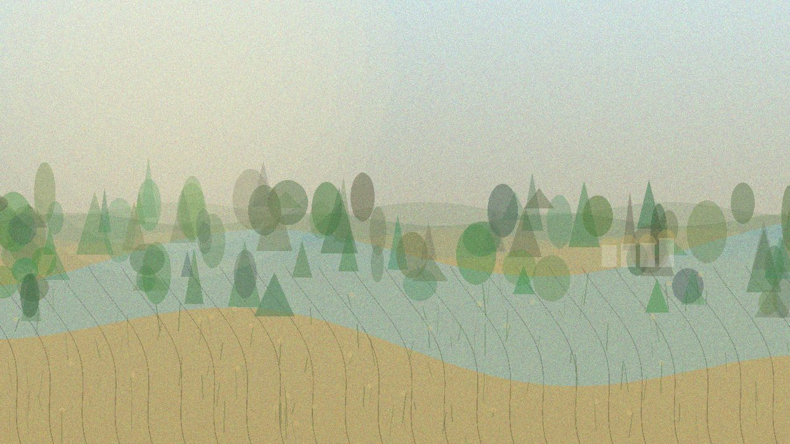

Главная / Ивановская область

Ивановская область
Что посадить
Что посадить
в Ивановской области
Для садовода область делится на влажные северо-западные леса, центральную текстильно-волжскую зону и юго-восточные суглинки.
Влажнее и прохладнее, с влиянием Волги: ставка на ягодники, капусту, картофель, зелень и кислые гряды.
Открыть страницу зоны → Центральная текстильно-волжская зонаУмеренная зона для базового огорода, ягодников и небольшого плодового сада с акцентом на зимостойкие сорта.
Открыть страницу зоны → Юго-восточные суглинки и НерльЧуть теплее и суше: хорошо подходят корнеплоды, яблоня, вишня и тёплые гряды с аккуратным поливом.
Открыть страницу зоны →